第6章 応用編
6.1 外部からエアコンの電源を操作する
6.2 2台のESP32を使ってピンポンする
サーバクライアントInterface 2018 9よりWi-FIネットワークはアクセス・ポイント（AP）を中心としたネットワークアクセスポイントは多くの場合、インターネットなどの他のネットワークに接続しており、その場合はルータとも呼ばれるアクセス・ポイントに接続する端末をステーション（STA）というESP32をAPモードするには> WiFi.softAP(ssid, password);STAモードでアクセスポイントに接続するには> WiFi.begin(ssid, password);
WiFiのアクセスポイントがなくてもESP32が2府あれば、片方をアクセスポイントにして通信できる
6.3 VScodeからESP32にスケッチを書き込む
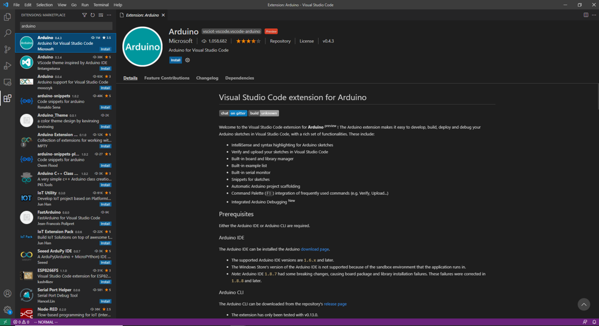
図6.1: 1
コマンドパレットctrl chift P
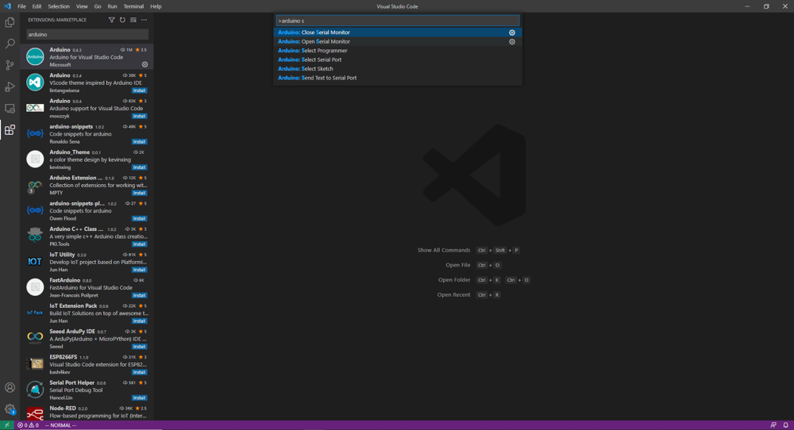
図6.2: 2
arduino serial
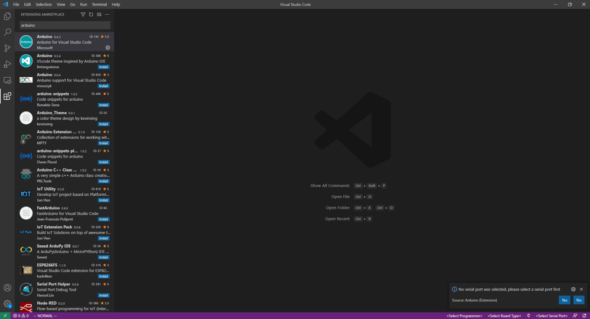
図6.3: 3
/mnt/c/Users/Document/Arduino
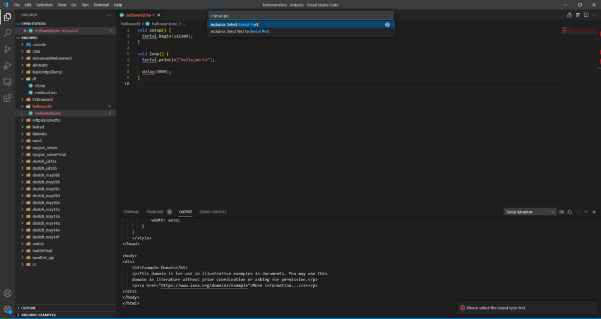
図6.4: 4
serial port 選択

図6.5: 5
ボード選択
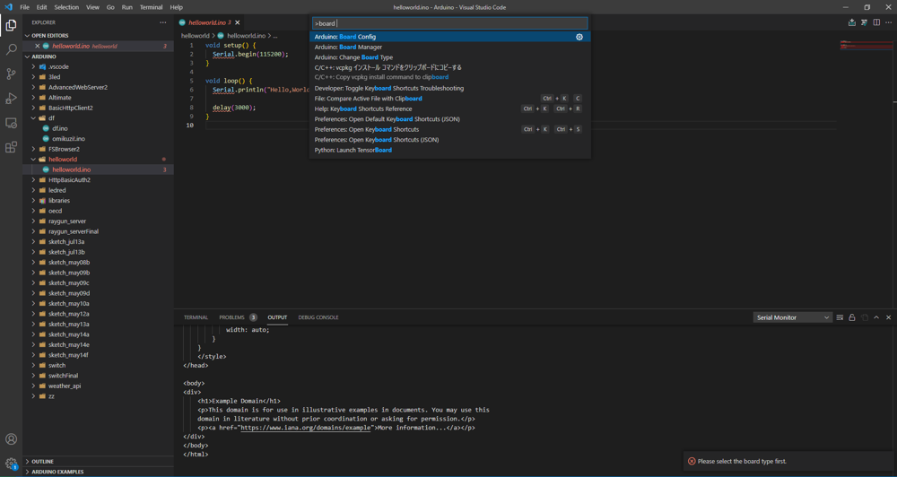
図6.6: 6
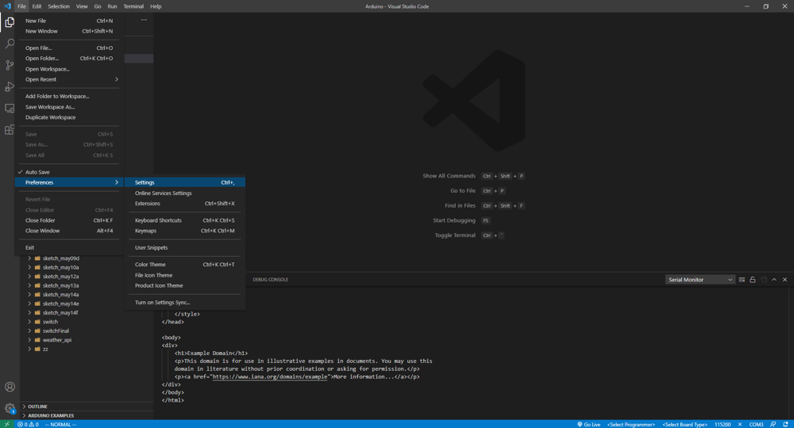
図6.7: 7
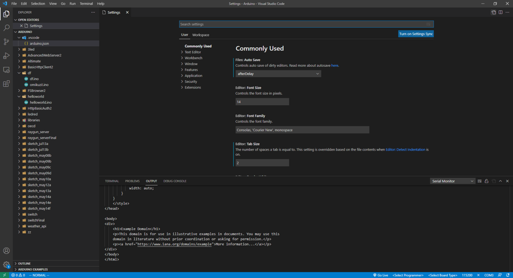
図6.8: 8
リスト6.1: json
"arduino.additionalUrls": [
"https://raw.githubusercontent.com/espressif/arduino-esp32/gh-pages/package_esp32_index.json"
],
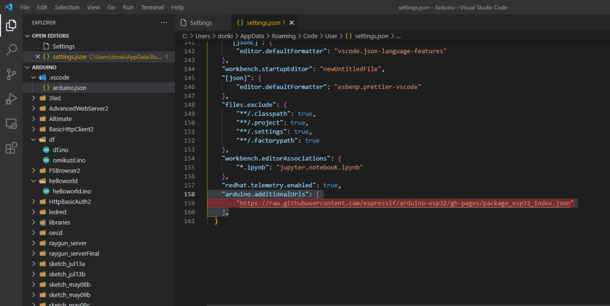
図6.9: 9
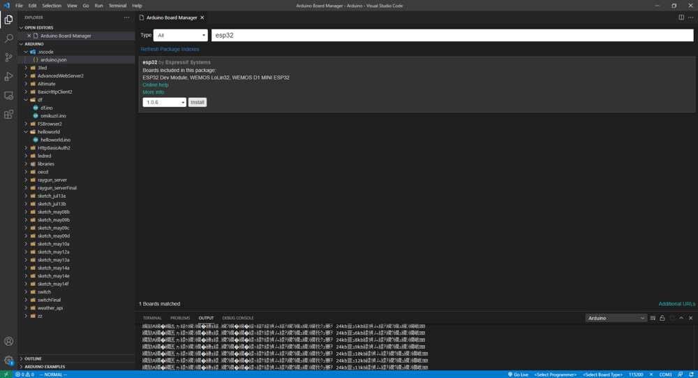
図6.10: 10
arduino bord maneger

図6.11: 11
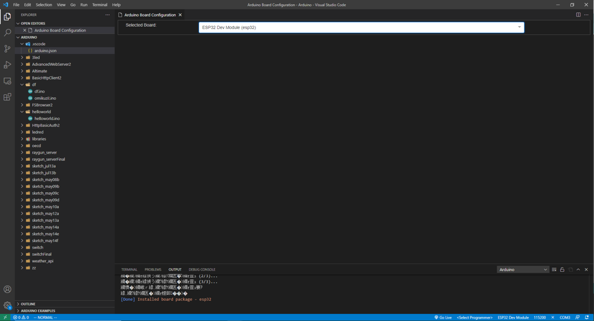
図6.12: 12
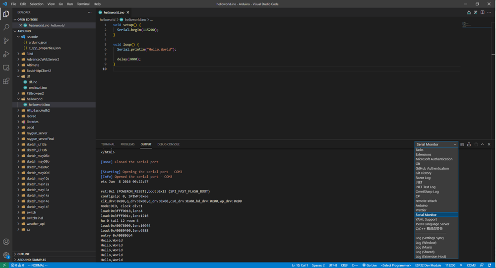
図6.13: 13
Arduino IDEのほうを動かしているとうまくいかない
インクルードパスの設定c_cpp_properties.jsonctrl shift Pselect sketchでビルドしたいファイルを選択https://garretlab.web.fc2.com/arduino/introduction/vscode/
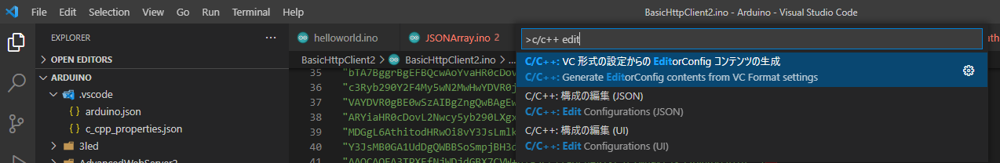
図6.14: 14